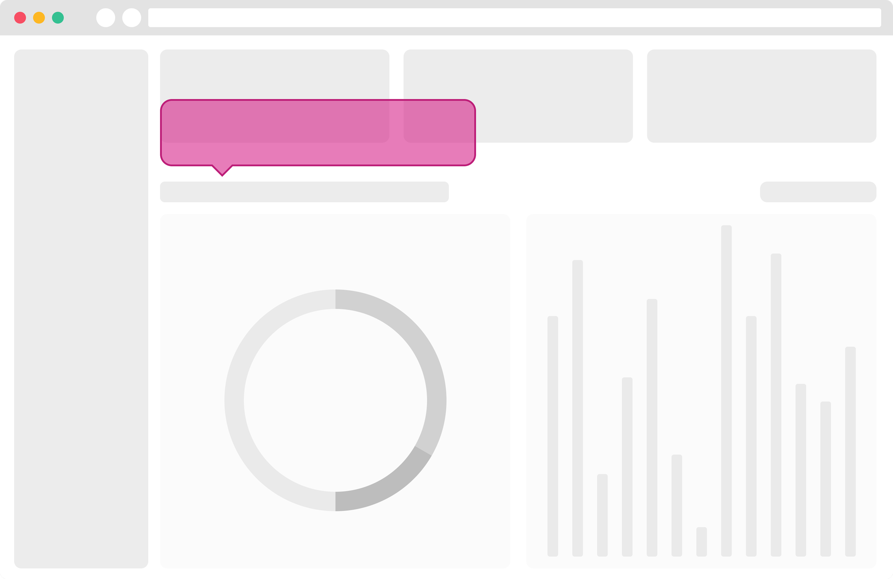
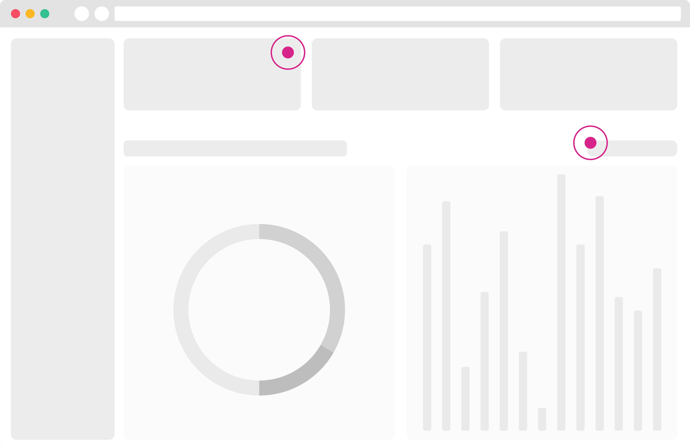

Context
What Whatfix does.
Whatfix is a digital adoption platform. Authors build in-product guidance inside their customers' enterprise applications (Salesforce, SAP, internal tools) and deploy it without engineering changes. Content creators work in a browser extension called Studio; end users see flows, tips, beacons, and pop-ups overlaid on the live product.
Five tabs to finish one job.
Customer feedback was consistent before we had a solution shape: authors lacked confidence because the workflow had too many front doors.
NDA protected
Unlock the full case study
The rest of this case study includes shipped UI, research artifacts, and metrics under confidentiality.
When I joined the panel workstream, the creation extension was technically strong and strategically narrow, but only for creation. Preview, stage changes, analyze performance, bulk-edit tags, or move content between folders meant opening the dashboard in another tab, finding the same asset again, and hoping context survived the jump.
Even expert users described the product as overly technical: multiple windows, repeated navigation, and no single place that answered Where is my work and what do I do next? Verbatim from research: "I usually have five to ten tabs of Whatfix open when I'm working on content."
Whatfix tabs open during a typical authoring session. Not power-user behaviour. The workflow forced it.
Creation and in-app editing. Strong at building, weak at everything after save.
Deployment, analytics, bulk actions, folder management. Disconnected from the page authors were authoring on.
Scattered preview entry points per content type. Fast checks, no shared mental model.
Objective. Enhance the current red-route for content deployment without breaking the in-context authoring model that made Studio valuable in the first place. The creation tool couldn't stay a single-function island while the product scaled.
Two personas carried most of the discovery load. Both non-technical; both punished by tab-switching.


What does the journey actually look like?
Contextual inquiries replaced assumptions. Authors didn't want more Whatfix. They wanted less of it between them and the job.
Customers had explicitly asked to edit inside Studio. Usability testing quantified the pain: switching products inflated task time. The open questions were sharper than the feature requests:
- What does authoring look like from creation through deployment?
- What changes are authors making on the dashboard that Studio should absorb?
- What expansion areas would matter in two years, not just two sprints?
- Creation and preview lived in different products
- Deployment and editing required dashboard context switches
- Authors re-found the same content repeatedly
- Authors spend their day inside customer applications
- Studio wins when it feels like part of that surface
- Every dashboard detour reads as product overhead
The reframing question that unlocked the roadmap: What if everything lived in one place? Not as a thought experiment. As a testable concept with trade-offs named upfront: panel space, technical weight, and the risk of turning Studio into a cramped dashboard clone.
All jobs in Studio won the room.
Concept testing before build. Five to seven enterprise authors per method. Click-and-explore with think-aloud.
Concept 1.1 · All JTBD in Studio
Create, edit, preview, deploy, and analyze inside the extension. Streamlined experience. Authors stay on the host application. Trade-off: space constraints and engineering weight.
Concept 2.1 · All JTBD in dashboard
More canvas area, but element selection breaks if authoring leaves the in-app surface. Authors still live in Whatfix instead of the customer product.
Concept 1.2 · Dashboard as extension
Promising on paper, technically heavy, and it duplicated navigation patterns authors already rejected.
Concept testing insights. Content creators liked a unified surface to create, manage, and analyze. Mechanical controls (expand, move left, minimize) needed to stay grouped; isolating "close" confused everyone. Dragging scored as unnecessary. A floating action button tested poorly: authors didn't want another widget cluttering the workspace they were trying to guide users through.

Three ideas we cut.
Concept testing cut ideas early so engineering didn't pay for them later.
A customizable floating action button for quick actions.
Authors rejected another persistent widget on the host application. Studio's value is guidance, not more chrome.
Free-form panel dragging.
Mechanical actions helped when predictable. Dragging added motor cost without speeding tasks.
Dashboard-only management as the long-term home.
More space, wrong context. Element selection and in-app authoring are non-negotiable for Studio.
Three changes, one surface.
Phase 1 shipped the spine. Phase 2 filled in the long tail. The design language stayed consistent across both.
Support editing, preview, deployment, and analysis in the extension. Manage guidance, search, bulk select, and open-in-dashboard only when the task genuinely needs more canvas.
Expand the panel for deep work. Move left, expand, and minimize as grouped mechanical actions. List-based folder navigation beat breadcrumbs by 2.3 seconds per task in usability testing.
Get Started orients by use case or type. Guide · Show · Ask · Analyze tabs reframe the product around what authors are doing, not which primitive they picked first.
Phased on purpose. Phase 1 covered editing for flows, beacons, smart tips, and launchers; bulk tagging; folder moves; preview; and dashboard link-outs. Phase 2 added pop-ups, surveys, translations, archiving, stage transitions, and moving preview under manage. Trade-off we accepted in Phase 1: retaining draft/ready/production tabs for stages because a cleaner model wasn't shippable yet.
Two paths, one panel.
Intent-first for newcomers. Type-first for experts. Same deployment loop underneath.
Onboarding a new flow
Use case- Open Studio on the host application.
- Choose Onboarding on Get Started.
- Start from Readymade content or build a Flow.
- Preview in Show without leaving the page.
- Stage to Ready, then Published.
- Check engagement in Analyze.
Fixing a published smart tip
Type- Open Studio on the target URL.
- Jump straight to Smart Tip from Type.
- Find the item in Manage guidance.
- Edit in panel, preview inline.
- Re-publish without opening the dashboard.
What made this hard.
Speed had a price. We shipped Phase 1 knowing Phase 2 would rewrite parts of it.
Enterprise recruiting was slow. Diverse personas and experience levels made five to seven users per method a ceiling, not a comfort zone. Progress waited on calendar, not conviction.
Design system rigidity protected velocity. Strict component reuse meant passing on local improvements that would have made management denser but more readable.
Engineering attention was fragmented. Not every developer joined syncs. Late opinions on panel mechanics cost us a cycle we couldn't afford in a three-month window.
Dashboard link-outs stayed confusing until the product switcher pattern. Only three of seven users completed the original link task. A/B testing in Maze showed product-switcher consistency fixed it.
What testing said before launch.
Authors completed most management tasks within two clicks once mechanical actions were grouped. Bulk select and folder moves stopped being dashboard-only rituals. Qualitative read matched the numbers: authors described Studio as one thing to learn, not five products stitched together.
Expected outcomes we tracked into development: roughly ninety percent reduction in product switching, nine-point lift against suite SUS benchmark, and full internal adoption of the new framework. I'd treat the switching metric as the one worth revisiting quarterly. It's the closest proxy to the five-tab problem we set out to kill.
What I'd unship, and what I'd design instead today.
The 2025 product is a phased panel. The 2026 product is a platform authors never have to leave.
Stage tabs (draft / ready / production) were a Phase 1 compromise. I'd invest earlier in a scalable status model instead of shipping debt we knew Phase 2 would rewrite.
Dashboard link-outs should have shipped with the product-switcher pattern on day one. Consistency beat cleverness.
Cold-start authors weren't in the first validation set. I'd test Scenario language with people who've never opened the old creation flow, not only authors unlearning five front doors.
Creation, preview, deploy, and analyze in the extension authors already trust.
Get Started by use case or type. Readymade content lowers the blank-canvas penalty.
Archive, translations, surveys, and status modeling fold into Studio instead of routing back to the dashboard.
This project was my first roadmap win aligned to explicit KRs with leadership, and my first concept-test-before-build cycle at scale. Both practices stuck. What I'd carry forward is simpler: name the trade-off when you phase, and measure tab-switching like a product metric, not a user quirk.
Studio taught me that consolidation only works when you respect the surface authors are actually on. The host application is the product. Whatfix has to meet authors there, not ask them to leave for every job after save.
Artifacts shown are shipped UI captures and concept-test frames from the panel redesign program. Before publish: replace placeholders with high-res exports from the final Guide, Show, Ask, and Analyze tabs and scrub any customer names from management lists.
Diagnostics: building a troubleshooting tool when nobody agreed on what was actually broken
Surface missing flows and let authors debug visibility issues on their own.